前置知识
commander
这是用来编写指令和处理命令行的，具体用法如下：
const program = require("commander");
// 定义指令
program
.version('0.0.1')
.command('init', 'Generate a new project from a template')
.action(() => {
// 回调函数
})
// 解析命令行参数
program.parse(process.argv);inquirer
这是个强大的交互式命令行工具，具体用法如下：
const inquirer = require('inquirer');
inquirer
.prompt([
// 一些交互式的问题
])
.then(answers => {
// 回调函数，answers 就是用户输入的内容，是个对象
});chalk
这是用来修改控制台输出内容样式的，比如颜色啊，具体用法如下：
const chalk = require('chalk');
console.log(chalk.green('success'));
console.log(chalk.red('error'));ora
这是一个好看的加载，就是你下载的时候会有个转圈圈的那种效果，用法如下：
const ora = require('ora')
let spinner = ora('downloading template ...')
spinner.start()download-git-repo
看名字很明显了，这是用来下载远程模板的，支持 GitHub、 GitLab 和 Bitbucket 等，用法如下
const download = require('download-git-repo')
download(repository, destination, options, callback)其中 repository 是远程仓库地址；destination 是存放下载的文件路径，也可以直接写文件名，默认就是当前目录；options 是一些选项，比如 { clone：boolean } 表示用 http download 还是 git clone 的形式下载。
目录搭建
1.首先我们要创建一个文件夹，并取名叫 xr-cli；
2.在该目录下执行 npm init 命令（你应该有安装 node 吧😂），一路回车，就会生成一个生成 package.json 文件，在 package.json 里面写入以下依赖并执行 npm install 安装，如下：
"dependencies": {
"chalk": "^2.4.2",
"commander": "^2.19.0",
"download-git-repo": "^1.1.0",
"inquirer": "^6.2.2",
"ora": "^3.2.0"
}3.新建一个 bin 文件夹，并在 bin 目录下新建一个无后缀名的 xr 文件，并写上
#!/usr/bin/env node
console.log('hello');这个文件就是我们整个脚手架的入口文件，我们用 node ./bin/xr 运行一下，就能在控制台打印出 hello，如下图：
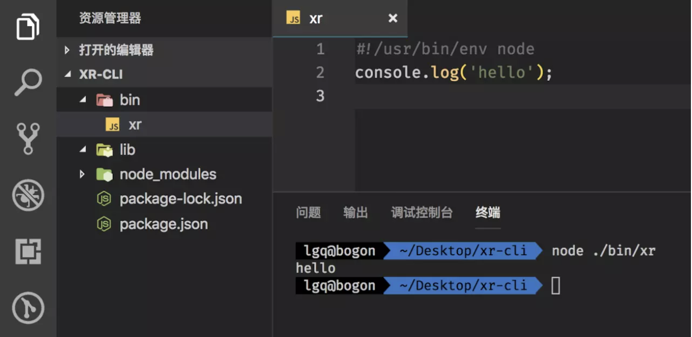
这里要注意开头的 #!/usr/bin/env node 这个语句必须加上，主要是为了让系统看到这一行的时候，会沿着该路径去查找 node 并执行，主要是为了兼容 Mac ，确保可执行
当前，bin 目录下就只有一个文件，就是入口文件 xr。所以现在我们先来编写这个文件，由于内容较少，我们直接看代码：
#!/usr/bin/env node
const program = require('commander')
// 定义当前版本
// 定义使用方法
// 定义四个指令
program
.version(require('../package').version)
.usage('<command> [options]')
.command('add', 'add a new template')
.command('delete', 'delete a template')
.command('list', 'list all the templates')
.command('init', 'generate a new project from a template')
// 解析命令行参数
program.parse(process.argv)这个文件的主要作用就是定义指令，现在我们用 node ./bin/xr 运行一下，就能看到如下结果
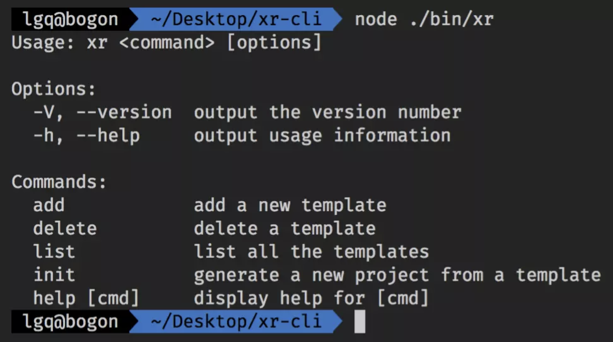
当然，你可能会觉得每次输入 node ./bin/xr 这个命令有点麻烦，没关系，我们可以在 package.json 里面写入已下内容：
// bin 用来指定每个命令所对应的可执行文件的位置
"bin": {
"xr": "bin/xr"
}然后在根目录下执行 npm link（就是把命令挂载到全局的意思），这样我们每次只要输入 xr，就可以直接运行了，so cool，就像下面这样
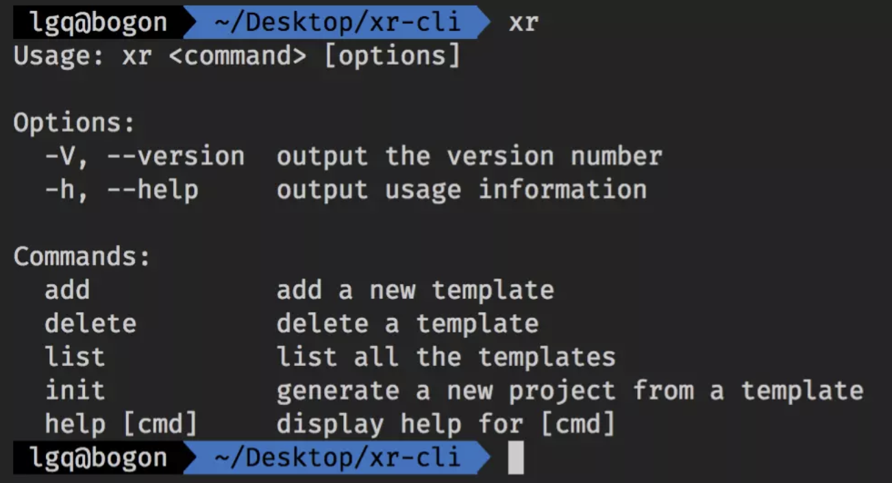
是不是好像有点样子了呢😁😁😁，那就让我们继续完善下 bin 目录吧！ok，让我们在 bin 目录下再新建四个文件，分别对应上面的四个指令，然后分别处理四个指令要做的事情，如下图:
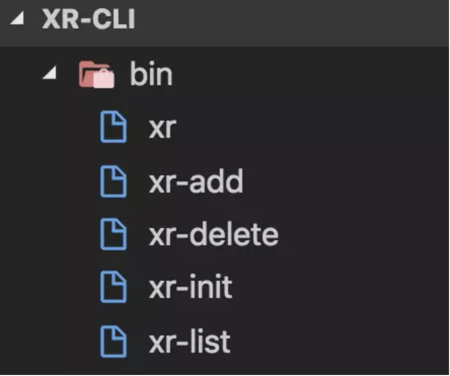
同样的，我们修改一下 package.json 里面的 bin 内容，如下：
"bin": {
"xr": "bin/xr",
"xr-add": "bin/xr-add",
"xr-delete": "bin/xr-delete",
"xr-list": "bin/xr-list",
"xr-init": "bin/xr-init"
}然后执行 npm unlink 解绑全局命令，再执行 npm link 重新把命令绑定到全局，就像下面这样：
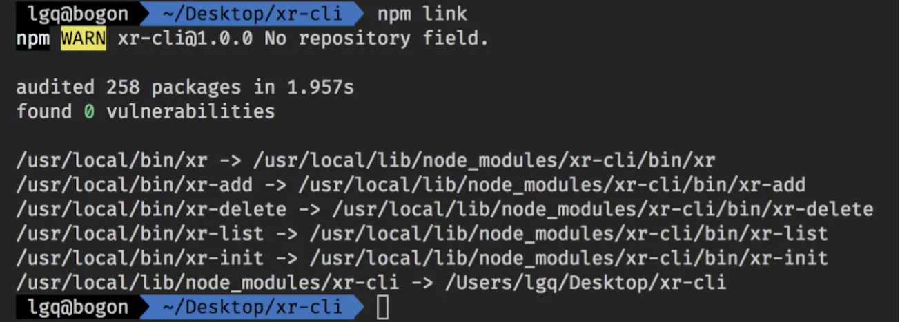
最后顺便在根目录下新建一个 template.json 文件，里面的内容就是一个 {}。
编写指令
好了，一切准备就绪，接下来就让我们来写下具体的四个指令吧。
xr-add
这个内容也是比较少，直接看代码：
#!/usr/bin/env node
// 交互式命令行
const inquirer = require('inquirer')
// 修改控制台字符串的样式
const chalk = require('chalk')
// node 内置文件模块
const fs = require('fs')
// 读取根目录下的 template.json
const tplObj = require(`${__dirname}/../template`)
// 自定义交互式命令行的问题及简单的校验
let question = [
{
name: "name",
type: 'input',
message: "请输入模板名称",
validate (val) {
if (val === '') {
return 'Name is required!'
} else if (tplObj[val]) {
return 'Template has already existed!'
} else {
return true
}
}
},
{
name: "url",
type: 'input',
message: "请输入模板地址",
validate (val) {
if (val === '') return 'The url is required!'
return true
}
}
]
inquirer
.prompt(question).then(answers => {
// answers 就是用户输入的内容，是个对象
let { name, url } = answers;
// 过滤 unicode 字符
tplObj[name] = url.replace(/[\u0000-\u0019]/g, '')
// 把模板信息写入 template.json 文件中
fs.writeFile(`${__dirname}/../template.json`, JSON.stringify(tplObj), 'utf-8', err => {
if (err) console.log(err)
console.log('\n')
console.log(chalk.green('Added successfully!\n'))
console.log(chalk.grey('The latest template list is: \n'))
console.log(tplObj)
console.log('\n')
})
})这个文件主要目的就是添加模板并存储起来，上面的注释应该都写的挺清楚了。我们执行 xr add 来看看效果
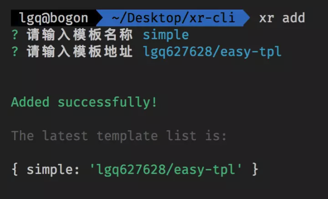
这里的模板名称（自己随便取）相当于 vue init webpack project-name 当中的 webpack；模板地址要注意一下，像下面这样写就可以，这里以 github 为例：

这里补充一下 xr add 怎么对应到 xr-add 的：我们前面在定义 program.command(‘add’).action(() => {}) 的时候没有写 action 这个回调函数，而当我们执行 xr add 的时候，commander 会尝试在入口脚本的目录中搜索可执行文件，找到形如 program-command（这里就是 xr-add）的命令来执行，大概是这么个意思，下面的命令也是一样的道理。
xr-delete
如果你理解了上面的那个步骤，这步对你来说应该也是洒洒水啦！上代码：
1 | #!/usr/bin/env node |
应该很好理解，就不过多解释了，我们直接执行 xr delete 看下效果：
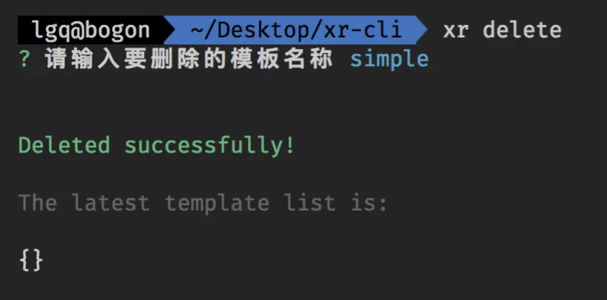
xr-list
这个更简单了，两行代码搞定：
1 |
|
是不是简单到爆💥。我们执行 xr list 看看效果：
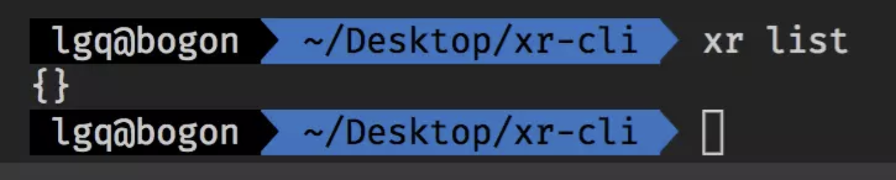
因为刚才一添加一删除，所以目前没有模板，就输出 {}。
xr-init
这应该是最主要（但不难）的一步了，毕竟我们写到现在还没有通过命令初始化过一个项目呢😭。所以这步的重点就是执行 download 方法，并传入相应参数，具体看代码：
1 | #!/usr/bin/env node |
ok，我们执行一下 xr init simple test，记得先执行一下 xr add：

现在我们就可以在左侧的目录中看到 test 项目了，如下图：
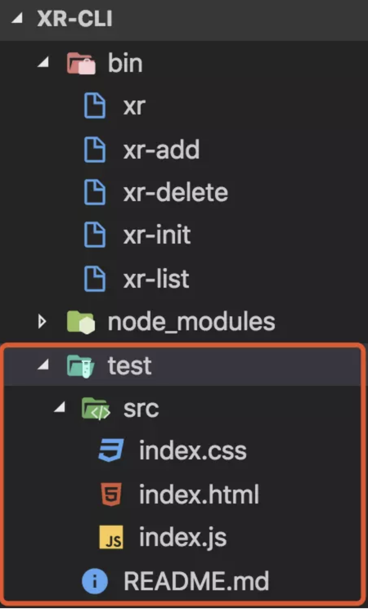
至此，一个小小的脚手架就做完了。🌹🌹🌹此处应该有鲜花和掌声👏👏👏
发布到npm
既然以上命令都执行成功了，那接下来我们就把它发布到 npm 上吧（写都写了，不能浪费😬）。
删除 test 文件夹，它就本地测试用的，用完就抛弃它（当然做人不能这样）
在根目录下新建 README.md 文件，随便写点使用说明，假装正经一下
在根目录下新建 .npmignore 文件，并写入 /node_modules，意思就是发布的时候忽略 node_modules 文件夹，
去 npm 官网注册个账号（很简单的），同时搜索一下 xr-cli 这个名字，看看有没有人用，有的话就换一个罗

现在让我们回到项目根目录，执行 npm login 登入 npm 账号，再执行 npm publish 发布，就像下面这样：
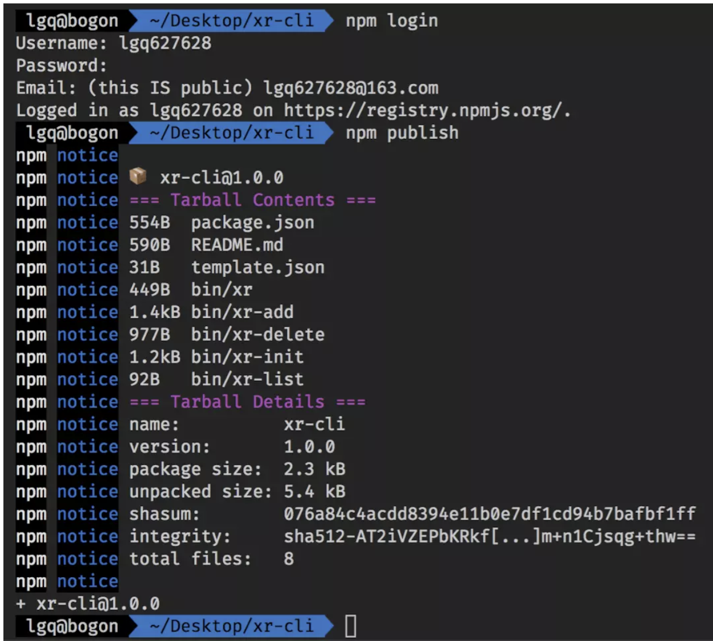
没错，就是这样两个简单的命令，我们就发布成功啦，真是可喜可贺🍺🍺🍺。大概过一分钟左右（反正挺快的），我们再去 npm 官网搜下 xr-cli，就可以看到自己的脚手架啦，哈哈哈哈，贼开心👍👍👍。
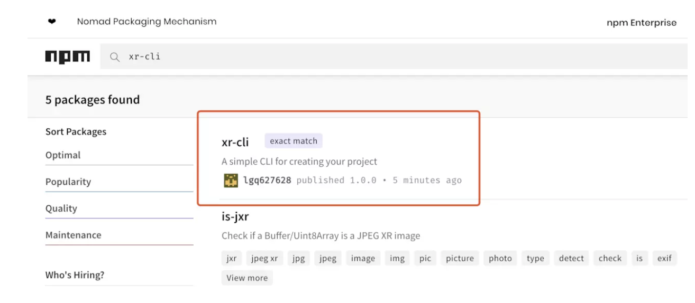
这里补充说明一点：根据规范，只有在发包的24小时内才允许撤销发布的包，所以为了不污染 npm 网站，如果只是测试的话就执行 npm unpublish –force 删除吧，毕竟我们都是有素质的人。
别急，还没有结束🙅♀️。发都发出去了，怎么也得验证一波撒。嗯，说的有道理，无法反驳，那就赶紧验收吧！这里我们记得先用 npm unlink 解绑一下命令，不然会相互影响。下面我们打开终端，输入 npm i xr-cli -g 全局安装一下脚手架，然后执行 xr，如果出现下图中的模样就说明已经安装成功了。
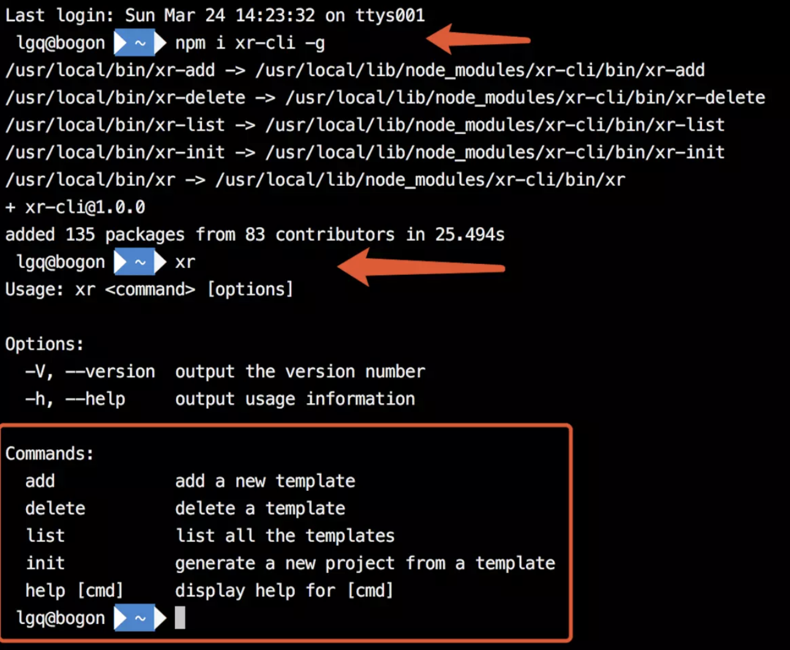
接下来进入到桌面，执行 xr init simple xr-test，不一会就可以在桌面上看到自己的项目啦。
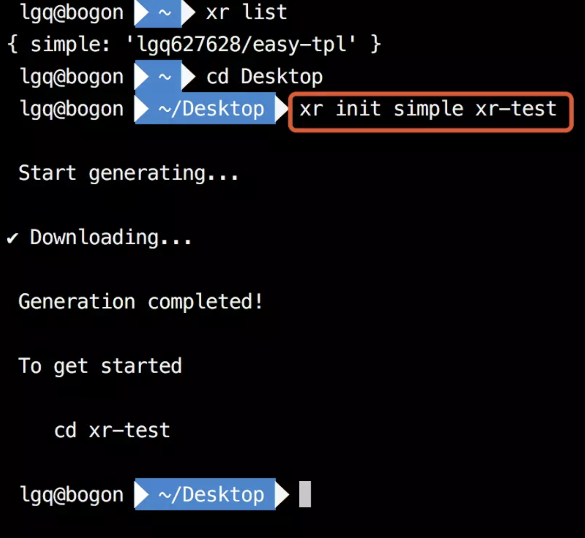
总结
上面的操作只要你熟悉了几遍之后，再去看看 vue-cli 的源码结构，你就会有种拨开云雾见月明的感觉（它只是比我们这个脚手架完善很多很多很多而已😭😭😭）。
当然了，这只是渣渣版本。你可以往里面添加更多的东西，比如自动化构建和动态模板啊（其实动态模板是个大头），然后尝试写下更多更好的交互和功能，这样你就也能拥有一个属于自己的脚手架啦，心动不如行动，还等什么呢，不要998，只要有键盘，赶紧敲吧同志们，Let’s go！🌈
踩到的坑
在填写模版的url时，不是填https://之类的地址，填的是git的项目名称/仓库名称，例如：lingdongyuanjia/test-cli